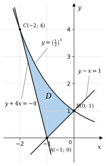
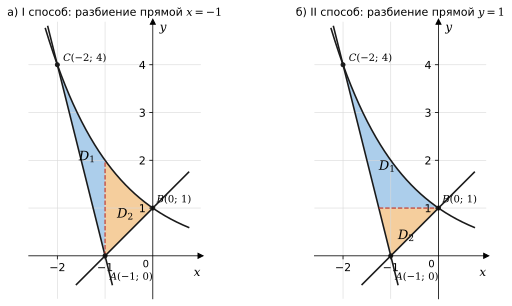
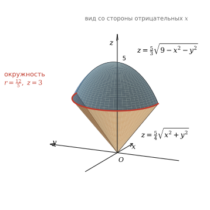
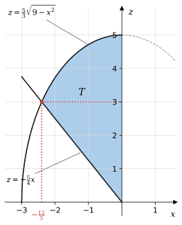
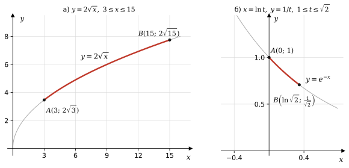
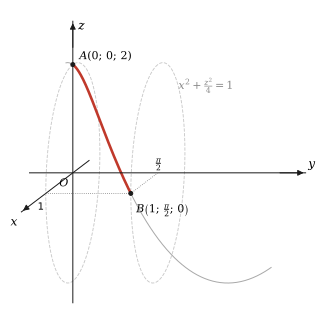
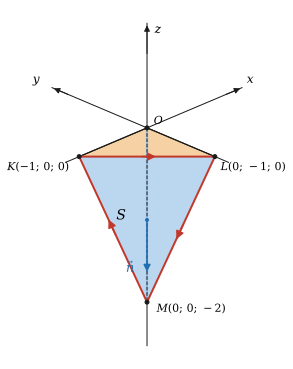
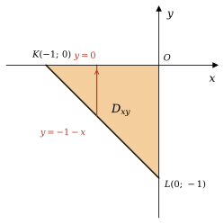

Вариант 7 · РГР 1 (задания 1–4) и РГР 2 (задания 5–6)
Условия: А. И. Попов, И. Ю. Попов «Типовой расчёт по кратным интегралам и теории поля», СПб, 2024, раздел 3
| № | Что найти | Ответ |
|---|---|---|
| 1 | Площадь области \(D\) | \(S=\dfrac{3}{\ln 2}-\dfrac52\approx 1{,}83\) |
| 2 | Объём тела \(T\) | \(V=6\pi\approx 18{,}85\) |
| 3 a) | Масса дуги \(y=2\sqrt x\) | \(M=112\) |
| 3 b) | Масса дуги \(x=\ln t,\ y=1/t\) | \(M=3\sqrt3-2\sqrt2\approx 2{,}37\) |
| 4 | Масса пространственной дуги | \(M=5\sqrt5-2\sqrt2\approx 8{,}35\) |
| 5 a) | Поток через часть \(S\) плоскости \(\sigma\) | \(Q=0\) |
| 5 b) | Поток через поверхность тетраэдра \(OLMK\) | \(Q=-\dfrac23\) |
| 5 c) | Циркуляция по контуру \(KLMK\) | \(C=\dfrac32\) |
| 6 | Соленоидальность, потенциальность | Поле соленоидальное, но не потенциальное; потенциала нет |
Как оформить по методическим указаниям (стр. 2):
• Работу пишут в отдельной тетради. Перед каждым заданием переписывают полное условие.
• Чертежи делают на миллиметровке и вклеивают в тетрадь с подписями и обозначениями. Рисунки в этом файле служат образцами для перерисовки.
• Решение сопровождают подробными пояснениями и заканчивают ответом. Работу нужно уметь защитить устно.
Плоская область \(D\) ограничена линиями \(\;y=\left(\frac12\right)^x,\quad y-x=1,\quad y+4x=-4.\)
1) Сделайте схематический рисунок области \(D\).
2) С помощью двойного интеграла найдите площадь области \(D\).
Решение.
1) Разрешим уравнения граничных линий относительно \(y\): \[ y=\left(\tfrac12\right)^x=2^{-x},\qquad y=x+1,\qquad y=-4x-4. \] Первая линия — график убывающей показательной функции, две другие — прямые. Найдём точки их пересечения.
Область \(D\) — криволинейный треугольник \(ABC\) (рис. 1). При \(-2\le x\le-1\) область снизу ограничена прямой \(y=-4x-4\), а при \(-1\le x\le0\) — прямой \(y=x+1\). Сверху область всюду ограничена кривой \(y=2^{-x}\).
Кривая \(y=2^{-x}\) и прямая \(y=-4x-4\) пересекаются ещё в точке \((-3;\,8)\). Однако кусок плоскости между ними при \(-3\le x\le-2\) ограничен только двумя линиями и не касается прямой \(y-x=1\), поэтому в область \(D\) он не входит.

2) Площадь \(S\) области \(D\) находится с помощью двойного интеграла по формуле \[ S=\iint\limits_D dx\,dy. \] Перейти от двойного интеграла к повторному можно двумя способами.
I способ. Представим интеграл в виде \(\displaystyle S=\int_a^b dx\int_{f_1(x)}^{f_2(x)}dy\). Прямая \(x=-1\) делит \(D\) на две части (рис. 2, а): \[ D_1:\ -2\le x\le -1,\ \ -4x-4\le y\le 2^{-x};\qquad D_2:\ -1\le x\le 0,\ \ x+1\le y\le 2^{-x}. \] \[ S=\int_{-2}^{-1}dx\int_{-4x-4}^{2^{-x}}dy+\int_{-1}^{0}dx\int_{x+1}^{2^{-x}}dy =\int_{-2}^{-1}\left(2^{-x}+4x+4\right)dx+\int_{-1}^{0}\left(2^{-x}-x-1\right)dx. \] Учитывая, что \(\displaystyle\int 2^{-x}dx=-\frac{2^{-x}}{\ln 2}+C\), получим: \[ \begin{aligned}\int_{-2}^{-1}\left(2^{-x}+4x+4\right)dx&=\left(-\frac{2^{-x}}{\ln2}+2x^2+4x\right)\Bigg|_{-2}^{-1}=\\ &=\left(-\frac{2}{\ln2}+2-4\right)-\left(-\frac{4}{\ln2}+8-8\right)=\frac{2}{\ln2}-2,\end{aligned} \] \[ \begin{aligned}\int_{-1}^{0}\left(2^{-x}-x-1\right)dx&=\left(-\frac{2^{-x}}{\ln2}-\frac{x^2}{2}-x\right)\Bigg|_{-1}^{0}=\\ &=-\frac{1}{\ln2}-\left(-\frac{2}{\ln2}-\frac12+1\right)=\frac{1}{\ln2}-\frac12.\end{aligned} \] \[ S=\frac{2}{\ln2}-2+\frac{1}{\ln2}-\frac12=\frac{3}{\ln2}-\frac52. \]

II способ. Представим интеграл в виде \(\displaystyle S=\int_c^d dy\int_{g_1(y)}^{g_2(y)}dx\). Разрешим уравнения граничных линий относительно \(x\): \[ x=-\log_2 y,\qquad x=y-1,\qquad x=-1-\frac{y}{4}. \] Прямая \(y=1\) делит \(D\) на нижнюю часть \(D_2\) и верхнюю часть \(D_1\) (рис. 2, б): \[ D_2:\ 0\le y\le 1,\ \ -1-\tfrac{y}{4}\le x\le y-1;\qquad D_1:\ 1\le y\le 4,\ \ -1-\tfrac{y}{4}\le x\le -\log_2 y. \] \[ S=\int_{0}^{1}dy\int_{-1-y/4}^{\,y-1}dx+\int_{1}^{4}dy\int_{-1-y/4}^{\,-\log_2 y}dx =\int_0^1\frac{5y}{4}\,dy+\int_1^4\left(1+\frac y4-\log_2 y\right)dy. \] Вычислим каждое слагаемое. Для интеграла от логарифма используем формулу \(\int\ln y\,dy=y\ln y-y+C\), которая получается интегрированием по частям: \[ \int_0^1\frac{5y}{4}\,dy=\frac{5y^2}{8}\Big|_0^1=\frac58,\qquad \int_1^4\left(1+\frac y4\right)dy=\left(y+\frac{y^2}{8}\right)\Big|_1^4=6-\frac98=\frac{39}{8}, \] \[ \int_1^4\log_2 y\,dy=\frac{1}{\ln2}\int_1^4\ln y\,dy=\frac{1}{\ln2}\,(y\ln y-y)\Big|_1^4=\frac{4\ln4-3}{\ln2}=8-\frac{3}{\ln2}. \] \[ S=\frac58+\frac{39}{8}-8+\frac{3}{\ln2}=\frac{3}{\ln2}-\frac52. \] Оба способа дали одинаковый результат.
Тело \(T\) ограничено поверхностями
\[ z=\tfrac53\sqrt{9-x^2-y^2},\qquad z=\tfrac54\sqrt{x^2+y^2},\qquad x=0\quad\text{при } x\le0. \]
1) Сделайте схематический рисунок тела \(T\).
2) С помощью тройного интеграла найдите объём тела \(T\), перейдя к цилиндрическим или сферическим координатам.
Решение.
1) Рассмотрим уравнение \(z=\frac53\sqrt{9-x^2-y^2}\). Из него следует, что \(z\ge0\), а после возведения в квадрат \[ \frac{9z^2}{25}=9-x^2-y^2\quad\Rightarrow\quad\frac{x^2}{9}+\frac{y^2}{9}+\frac{z^2}{25}=1. \] Значит, это верхняя половина эллипсоида вращения с полуосями \(3,\ 3,\ 5\) и вершиной в точке \((0;\,0;\,5)\).
Уравнение \(z=\frac54\sqrt{x^2+y^2}\) задаёт верхнюю полость кругового конуса с вершиной в точке \(O(0;\,0;\,0)\) и осью \(Oz\).
Уравнение \(x=0\) задаёт координатную плоскость \(Oyz\). Условие \(x\le0\) выделяет ту часть тела, которая лежит в области неположительных абсцисс.
Тело \(T\) снизу ограничено конусом, а сверху — эллипсоидом. Это половина «рожка», отрезанная плоскостью \(Oyz\) (рис. 3 и 4).

2) Объём тела выражается тройным интегралом \(\displaystyle V=\iiint\limits_T dv\). Перейдём к цилиндрическим координатам \(x=r\cos\varphi,\ y=r\sin\varphi,\ z=z\), учитывая, что \(x^2+y^2=r^2\). Якобиан перехода равен \(r\), поэтому \[ V=\iiint\limits_T r\,dr\,d\varphi\,dz. \] В цилиндрических координатах уравнение эллипсоида принимает вид \(z=\frac53\sqrt{9-r^2}\), а уравнение конуса — \(z=\frac54 r\).
Неравенство \(x\le0\) в цилиндрических координатах: \[ r\cos\varphi\le0\quad\Rightarrow\quad\cos\varphi\le0\quad\Rightarrow\quad\frac{\pi}{2}\le\varphi\le\frac{3\pi}{2}. \tag{1} \] Найдём линию пересечения эллипсоида и конуса: \[ \frac53\sqrt{9-r^2}=\frac54r\ \Rightarrow\ 16(9-r^2)=9r^2\ \Rightarrow\ r^2=\frac{144}{25}\ \Rightarrow\ r=\frac{12}{5},\quad z=\frac54\cdot\frac{12}{5}=3. \] Поверхности пересекаются по окружности радиуса \(\frac{12}{5}\) в плоскости \(z=3\). Поэтому для всех точек тела \[ 0\le r\le\frac{12}{5}. \tag{2} \] Прямая, параллельная оси \(Oz\), входит в тело через конус и выходит через эллипсоид (рис. 4): \[ \frac54r\le z\le\frac53\sqrt{9-r^2}. \tag{3} \]

Используя условия (1)–(3), расставим пределы интегрирования: \[ V=\int_{\pi/2}^{3\pi/2}d\varphi\int_0^{12/5}r\,dr\int_{\frac54r}^{\frac53\sqrt{9-r^2}}dz =\int_{\pi/2}^{3\pi/2}d\varphi\int_0^{12/5}\left(\frac53\,r\sqrt{9-r^2}-\frac54\,r^2\right)dr. \] Для первого слагаемого применим подведение под знак дифференциала: \(r\,dr=-\frac12\,d(9-r^2)\). \[ \begin{aligned}\int_0^{12/5}r\sqrt{9-r^2}\,dr&=-\frac12\int_0^{12/5}(9-r^2)^{1/2}d(9-r^2)=-\frac13(9-r^2)^{3/2}\Big|_0^{12/5}=\\ &=-\frac13\left(\frac{729}{125}-27\right)=\frac{882}{125}.\end{aligned} \] Здесь \(9-\frac{144}{25}=\frac{81}{25}\) и \(\left(\frac{81}{25}\right)^{3/2}=\left(\frac95\right)^3=\frac{729}{125}\). Поэтому \[ \frac53\cdot\frac{882}{125}=\frac{294}{25},\qquad \int_0^{12/5}\frac54\,r^2\,dr=\frac{5r^3}{12}\Big|_0^{12/5}=\frac{5}{12}\cdot\frac{1728}{125}=\frac{144}{25}. \] \[ V=\int_{\pi/2}^{3\pi/2}\left(\frac{294}{25}-\frac{144}{25}\right)d\varphi=6\int_{\pi/2}^{3\pi/2}d\varphi=6\pi. \]
С помощью криволинейного интеграла первого рода найдите массу \(M\) дуги плоской материальной кривой, заданной уравнениями:
a) \(y=2\sqrt{x}\), \(\ \rho(x,y)=\dfrac{6x}{y}\), \(\ x_1=3,\ x_2=15\);
b) \(\begin{cases}x=\ln t,\\ y=\dfrac1t,\end{cases}\) \(\ \rho(x,y)=\dfrac{3e^x}{y^2}\), \(\ t_1=1,\ t_2=\sqrt2\).
Решение.
Масса \(M\) дуги \(AB\) материальной кривой выражается криволинейным интегралом первого рода \[ M=\int\limits_{AB}\rho(x,y)\,dl, \] где \(dl\) — дифференциал длины дуги.
a) Если кривая задана уравнением \(y=f(x)\), то \(dl=\sqrt{1+(f'(x))^2}\,dx\) и \[ M=\int_{x_1}^{x_2}\rho\bigl(x,f(x)\bigr)\sqrt{1+(f'(x))^2}\,dx. \] Здесь \(f(x)=2\sqrt x\) и \(f'(x)=\dfrac{1}{\sqrt x}\). Учитывая, что \(x>0\) во всех точках дуги, получим \[ dl=\sqrt{1+\frac1x}\,dx=\frac{\sqrt{x+1}}{\sqrt x}\,dx. \] Плотность на кривой: \(\rho\bigl(x,2\sqrt x\bigr)=\dfrac{6x}{2\sqrt x}=3\sqrt x\). Дуга идёт от точки \(A(3;\,2\sqrt3)\) до точки \(B(15;\,2\sqrt{15})\) (рис. 5, а). \[ \begin{aligned}M&=\int_3^{15}3\sqrt x\cdot\frac{\sqrt{x+1}}{\sqrt x}\,dx=3\int_3^{15}(x+1)^{1/2}dx=\\ &=3\cdot\frac23(x+1)^{3/2}\Big|_3^{15}=2\left(16^{3/2}-4^{3/2}\right)=2(64-8)=112.\end{aligned} \]
b) Если кривая задана параметрически, \(x=\varphi(t),\ y=\psi(t)\), то \(dl=\sqrt{(\varphi'(t))^2+(\psi'(t))^2}\,dt\) и \[ M=\int_{t_1}^{t_2}\rho\bigl(\varphi(t),\psi(t)\bigr)\sqrt{(\varphi'(t))^2+(\psi'(t))^2}\,dt. \] Здесь \(\varphi'(t)=\dfrac1t,\ \psi'(t)=-\dfrac{1}{t^2}\). Так как \(t>0\), \[ dl=\sqrt{\frac1{t^2}+\frac1{t^4}}\,dt=\frac{\sqrt{t^2+1}}{t^2}\,dt. \] Плотность на кривой: \(e^{x}=e^{\ln t}=t\) и \(y^2=\dfrac1{t^2}\), поэтому \(\rho=3t\cdot t^2=3t^3\). Исключив параметр, получим \(y=e^{-x}\): это дуга от \(A(0;\,1)\) до \(B\left(\ln\sqrt2;\,\frac{1}{\sqrt2}\right)\) (рис. 5, б). \[ \begin{aligned}M&=\int_1^{\sqrt2}3t^3\cdot\frac{\sqrt{t^2+1}}{t^2}\,dt=3\int_1^{\sqrt2}t\sqrt{t^2+1}\,dt=\\ &=\frac32\int_1^{\sqrt2}(t^2+1)^{1/2}d(t^2+1)=(t^2+1)^{3/2}\Big|_1^{\sqrt2}=3\sqrt3-2\sqrt2.\end{aligned} \]

С помощью криволинейного интеграла первого рода найдите массу \(M\) дуги пространственной материальной кривой \[ \begin{cases}x=\sin t,\\ y=t,\\ z=2\cos t,\end{cases}\qquad 0\le t\le\frac{\pi}{2}, \] если плотность вещества равна \(\rho(x,y,z)=\frac92\,xz\).
Решение.
Масса \(M\) дуги \(AB\) выражается криволинейным интегралом первого рода \[ M=\int\limits_{AB}\rho(x,y,z)\,dl. \] Если кривая задана параметрически, \(x=\varphi(t),\ y=\psi(t),\ z=\chi(t)\), то \[ dl=\sqrt{(\varphi'(t))^2+(\psi'(t))^2+(\chi'(t))^2}\,dt \] и криволинейный интеграл сводится к определённому: \[ M=\int_{t_1}^{t_2}\rho\bigl(\varphi(t),\psi(t),\chi(t)\bigr)\sqrt{(\varphi'(t))^2+(\psi'(t))^2+(\chi'(t))^2}\,dt. \]
Так как \(x^2+\frac{z^2}{4}=\sin^2t+\cos^2t=1\), кривая лежит на эллиптическом цилиндре с осью \(Oy\). При этом координата \(y=t\) равномерно растёт, поэтому кривая — дуга эллиптической спирали, которая «вьётся» вокруг оси \(Oy\). Дуга начинается в точке \(A(0;\,0;\,2)\) при \(t=0\) и заканчивается в точке \(B\left(1;\,\frac{\pi}{2};\,0\right)\) при \(t=\frac{\pi}{2}\) (рис. 6).

Найдём производные: \(\varphi'(t)=\cos t,\ \psi'(t)=1,\ \chi'(t)=-2\sin t\). Тогда \[ dl=\sqrt{\cos^2t+1+4\sin^2t}\,dt=\sqrt{2+3\sin^2t}\,dt. \] Плотность на кривой: \(\rho(\sin t,\ t,\ 2\cos t)=\frac92\cdot\sin t\cdot2\cos t=9\sin t\cos t\). При \(0\le t\le\frac\pi2\) она неотрицательна. \[ M=\int_0^{\pi/2}9\sin t\cos t\,\sqrt{2+3\sin^2t}\,dt. \] Сделаем замену \(u=2+3\sin^2t\). Тогда \(du=6\sin t\cos t\,dt\) и \(\sin t\cos t\,dt=\frac{du}{6}\); при \(t=0\) получаем \(u=2\), при \(t=\frac\pi2\) — \(u=5\). \[ M=\frac96\int_2^5u^{1/2}\,du=\frac32\cdot\frac23\,u^{3/2}\Big|_2^5=5\sqrt5-2\sqrt2. \]
Дано векторное поле \(\vec a=(z-y)\,\vec i+(x+y-2z)\,\vec k\) и плоскость \(\sigma:\ 2x+2y+z=-2\), пересекающая координатные плоскости по замкнутой ломаной \(KLMK\), где \(K,\ L,\ M\) — точки пересечения плоскости \(\sigma\) с координатными осями \(Ox,\ Oy,\ Oz\) соответственно.
a) Найдите поток \(Q\) векторного поля \(\vec a\) через часть \(S\) плоскости \(\sigma\), вырезанную координатными плоскостями, в сторону нормали \(\vec n\), направленной от начала координат \(O(0;\,0;\,0)\).
b) С помощью теоремы Остроградского–Гаусса найдите поток \(Q\) векторного поля \(\vec a\) через полную поверхность тетраэдра \(OLMK\) в сторону внешней нормали.
c) Найдите циркуляцию \(C\) векторного поля \(\vec a\) по контуру \(KLMK\), образованному пересечением плоскости \(\sigma\) с координатными плоскостями.
Решение.
Координаты поля: \(a_x=z-y,\ a_y=0,\ a_z=x+y-2z\).
Найдём точки пересечения плоскости \(\sigma\) с осями. При \(y=z=0\) получаем \(2x=-2\), то есть \(K(-1;\,0;\,0)\). Аналогично находим \(L(0;\,-1;\,0)\) и \(M(0;\,0;\,-2)\). Часть \(S\) плоскости \(\sigma\) — треугольник \(KLM\). Он лежит в октанте \(x\le0,\ y\le0,\ z\le0\), то есть в нижнем полупространстве (рис. 7).

Поток выражается поверхностным интегралом первого рода \[ Q=\iint\limits_S\vec a\cdot\vec n\,dS,\qquad \vec a\cdot\vec n=a_x\cos\alpha+a_y\cos\beta+a_z\cos\gamma. \] Разрешим уравнение плоскости относительно \(z\): \(z=-2-2x-2y\). Отсюда \(p=\frac{\partial z}{\partial x}=-2\), \(q=\frac{\partial z}{\partial y}=-2\) и \(\sqrt{1+p^2+q^2}=\sqrt{1+4+4}=3\). Направляющие косинусы нормали: \[ \cos\alpha=\frac{-p}{\pm3},\qquad\cos\beta=\frac{-q}{\pm3},\qquad\cos\gamma=\frac{1}{\pm3}. \] Часть \(S\) лежит в нижнем полупространстве, и нормаль, направленная от начала координат, образует с осью \(Oz\) тупой угол. Поэтому перед радикалом выбираем знак «\(-\)»: \[ \cos\alpha=-\frac23,\qquad\cos\beta=-\frac23,\qquad\cos\gamma=-\frac13,\qquad\vec n=\left(-\frac23;\ -\frac23;\ -\frac13\right). \] Проверим направление. В точке \(O\) выражение \(2x+2y+z\) равно \(0>-2\), а при смещении вдоль \(\vec n\) оно убывает, так как \((2;2;1)\cdot\vec n=-3<0\). Значит, \(\vec n\) направлена в сторону, противоположную началу координат.
Найдём скалярное произведение: \[ \vec a\cdot\vec n=(z-y)\left(-\frac23\right)+(x+y-2z)\left(-\frac13\right)=\frac{-2z+2y-x-y+2z}{3}=\frac{y-x}{3}. \] Переменная \(z\) сократилась, поэтому подставлять \(z=-2-2x-2y\) не требуется. Дифференциал площади поверхности: \(dS=\sqrt{1+p^2+q^2}\,dx\,dy=3\,dx\,dy\). Проекция \(S\) на плоскость \(Oxy\) — треугольник \(OKL\) (рис. 8): \(-1\le x\le0,\ -1-x\le y\le0\). \[ \begin{aligned}Q&=\iint\limits_{D_{xy}}\frac{y-x}{3}\cdot3\,dx\,dy=\int_{-1}^{0}dx\int_{-1-x}^{0}(y-x)\,dy=\\ &=\int_{-1}^{0}\left(\frac{y^2}{2}-xy\right)\Bigg|_{-1-x}^{0}dx=-\int_{-1}^{0}\left(\frac{(1+x)^2}{2}+x(1+x)\right)dx.\end{aligned} \] \[ Q=-\frac12\int_{-1}^{0}\left(1+4x+3x^2\right)dx=-\frac12\left(x+2x^2+x^3\right)\Big|_{-1}^{0}=-\frac12\bigl(0-(-1+2-1)\bigr)=0. \] Результат можно предвидеть: треугольник \(D_{xy}\) симметричен относительно прямой \(y=x\), а функция \(y-x\) при перестановке \(x\) и \(y\) меняет знак.

Формула Остроградского–Гаусса: \(\displaystyle Q=\iiint\limits_T\operatorname{div}\vec a\,dv\), где \(\operatorname{div}\vec a=\frac{\partial a_x}{\partial x}+\frac{\partial a_y}{\partial y}+\frac{\partial a_z}{\partial z}\). \[ \operatorname{div}\vec a=\frac{\partial(z-y)}{\partial x}+\frac{\partial\,0}{\partial y}+\frac{\partial(x+y-2z)}{\partial z}=0+0-2=-2. \] Дивергенция постоянна, поэтому \(Q=-2\,V_T\), где \(V_T\) — объём тетраэдра \(OLMK\): \[ V_T=\frac13\cdot OM\cdot\frac12\cdot OK\cdot OL=\frac16\cdot1\cdot1\cdot2=\frac13,\qquad Q=-2\cdot\frac13=-\frac23. \]
I способ. Циркуляция — криволинейный интеграл второго рода: \[ C=\oint\limits_{KLMK}a_x\,dx+a_y\,dy+a_z\,dz=\oint\limits_{KLMK}(z-y)\,dx+(x+y-2z)\,dz. \] Обход: \(K\to L\to M\to K\) (стрелки на рис. 7). По свойству аддитивности \(C=I_{KL}+I_{LM}+I_{MK}\).
1) Отрезок \(KL\): \(z=0,\ x+y=-1\), откуда \(dz=0\) и \(y=-1-x\); \(x\) меняется от \(-1\) до \(0\). \[ I_{KL}=\int_{-1}^{0}\bigl(0-(-1-x)\bigr)dx=\int_{-1}^{0}(1+x)\,dx=\left(x+\frac{x^2}{2}\right)\Big|_{-1}^{0}=\frac12. \] 2) Отрезок \(LM\): \(x=0,\ 2y+z=-2\), откуда \(dx=0\) и \(y=-1-\frac z2\); \(z\) меняется от \(0\) до \(-2\). \[ I_{LM}=\int_{0}^{-2}\left(-1-\frac z2-2z\right)dz=\int_{0}^{-2}\left(-1-\frac{5z}{2}\right)dz=\left(-z-\frac{5z^2}{4}\right)\Big|_{0}^{-2}=2-5=-3. \] 3) Отрезок \(MK\): \(y=0,\ 2x+z=-2\), откуда \(x=-1-\frac z2\) и \(dx=-\frac12dz\); \(z\) меняется от \(-2\) до \(0\). \[ \begin{aligned}I_{MK}&=\int_{-2}^{0}\left(z\cdot\left(-\frac12\right)+\left(-1-\frac z2-2z\right)\right)dz=\\ &=\int_{-2}^{0}(-1-3z)\,dz=\left(-z-\frac{3z^2}{2}\right)\Big|_{-2}^{0}=0-(2-6)=4.\end{aligned} \] \[ C=\frac12-3+4=\frac32. \]
II способ (теорема Стокса). Циркуляция равна потоку ротора через поверхность, натянутую на контур: \(\displaystyle C=\iint\limits_S\operatorname{rot}\vec a\cdot\vec n\,dS\). \[ \operatorname{rot}\vec a=\begin{vmatrix}\vec i&\vec j&\vec k\\ \frac{\partial}{\partial x}&\frac{\partial}{\partial y}&\frac{\partial}{\partial z}\\ z-y&0&x+y-2z\end{vmatrix} =(1-0)\,\vec i-(1-1)\,\vec j+\bigl(0-(-1)\bigr)\,\vec k=\vec i+\vec k. \] Сторону \(S\) выбираем так, чтобы при наблюдении с конца нормали обход \(K\to L\to M\) происходил против часовой стрелки. Такая нормаль сонаправлена вектору \[ \overrightarrow{KL}\times\overrightarrow{KM}=\begin{vmatrix}\vec i&\vec j&\vec k\\ 1&-1&0\\ 1&0&-2\end{vmatrix}=(2;\ 2;\ 1),\qquad \vec n=\left(\frac23;\ \frac23;\ \frac13\right). \] Эта нормаль направлена к началу координат, то есть противоположна нормали из п. a. Тогда \(\operatorname{rot}\vec a\cdot\vec n=\frac23+\frac13=1\) и \[ C=\iint\limits_S dS=S_{\triangle KLM}=\frac12\left|\overrightarrow{KL}\times\overrightarrow{KM}\right|=\frac12\sqrt{4+4+1}=\frac32. \] То же получается через проекции: нормаль образует острые углы с осями \(Ox\) и \(Oz\), поэтому \(C=\iint\limits_{S}dy\,dz+dx\,dy=S_{\triangle OLM}+S_{\triangle OKL}=1+\frac12=\frac32\).
Дано векторное поле \(\vec a(M)=(z^2-y^2)\,\vec i+(2y\cos x+2)\,\vec j-2z\cos x\,\vec k\).
a) Проверьте, является ли векторное поле соленоидальным или потенциальным.
b) Если поле потенциально, найдите его потенциал.
Решение.
a) Поле определено при любых значениях \(x,\ y,\ z\). Условие соленоидальности — равенство дивергенции нулю во всей области определения поля: \[ \operatorname{div}\vec a=\frac{\partial(z^2-y^2)}{\partial x}+\frac{\partial(2y\cos x+2)}{\partial y}+\frac{\partial(-2z\cos x)}{\partial z}=0+2\cos x-2\cos x=0. \] Дивергенция тождественно равна нулю, следовательно, поле соленоидально.
Условие потенциальности — равенство ротора нулевому вектору во всей области определения поля: \[ \operatorname{rot}\vec a=\begin{vmatrix}\vec i&\vec j&\vec k\\ \frac{\partial}{\partial x}&\frac{\partial}{\partial y}&\frac{\partial}{\partial z}\\ z^2-y^2&2y\cos x+2&-2z\cos x\end{vmatrix}= \] \[ \begin{aligned}&=\left(\frac{\partial(-2z\cos x)}{\partial y}-\frac{\partial(2y\cos x+2)}{\partial z}\right)\vec i -\left(\frac{\partial(-2z\cos x)}{\partial x}-\frac{\partial(z^2-y^2)}{\partial z}\right)\vec j\,+\\ &\quad+\left(\frac{\partial(2y\cos x+2)}{\partial x}-\frac{\partial(z^2-y^2)}{\partial y}\right)\vec k=\end{aligned} \] \[ =(0-0)\,\vec i-(2z\sin x-2z)\,\vec j+(-2y\sin x+2y)\,\vec k=2z(1-\sin x)\,\vec j+2y(1-\sin x)\,\vec k. \] Ротор не равен нулю тождественно: например, в точке \(M_0(0;\,1;\,1)\) получаем \(\operatorname{rot}\vec a=2\vec j+2\vec k\ne\vec 0\). Следовательно, поле не является потенциальным.
b) Поле не потенциально, поэтому потенциала у него нет. Это можно проверить и напрямую. Если бы \(\vec a=\operatorname{grad}U\), то \(\frac{\partial U}{\partial x}=z^2-y^2\) и \(\frac{\partial U}{\partial y}=2y\cos x+2\). Тогда смешанная производная \(\frac{\partial^2U}{\partial x\,\partial y}\) была бы равна одновременно \(\frac{\partial(z^2-y^2)}{\partial y}=-2y\) и \(\frac{\partial(2y\cos x+2)}{\partial x}=-2y\sin x\). Эти выражения различны, получаем противоречие.